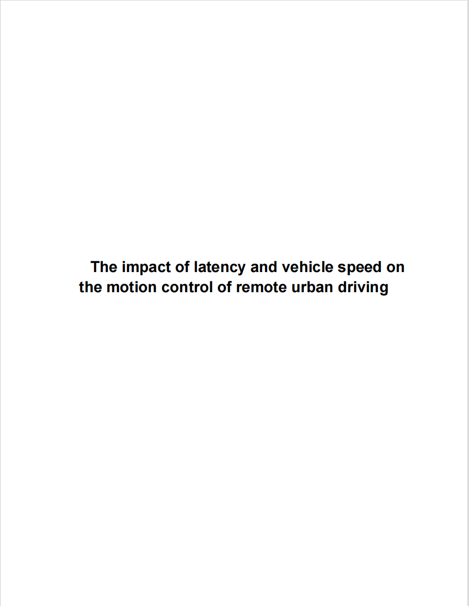

About
Hi, I'm Hengxiang Chen. Contact me with any excuse: Email
I am a research assistant in robotics. My work centers on robot learning, especially in mobile manipulation.
I am currently a Research Assistant at the Arbeit Gruppe
Dexterous Robotics Lab of Shenzhen Technology University.
I am going to become a M.Phil. in Robotics at HKUST(GZ), and I previously studied
vehicle engineering at SZTU. I was also an exchange student at
Hochschule Coburg in Germany.
"All formulas equalize under the Sun!"


Research Interests
- Mobile Manipulation
- Robot Learning
Recent Updates
- Currently I am preparing for my ielts exam on May 8th, check my notes here.
- 08.2025: Offer accepted for M.Phil. at HKUSTGZ. Thanks, HKUSTGZ!
- 06.2025: Graduated from SZTU.
- 08.2024: Offer accepted X-Talent in SZTU as an research assistant. Thanks, SZTU!
- 08.2024: Finished internship at VALEO in Kronach, Germany. Thanks, Valeo! [Report].
- 03.2024: Finished research work in SZTU Racing Car Studio about intelligent driving.
Selected Publications
Robot Learning
Octopi-X: Robotic Perception with a Large Tactile-Vision-Language Model for Physical Property Inference
Inferring physical properties can significantly enhance robotic manipulation by enabling robots to handle objects safely and efficiently through adaptive grasping strategies. We integrate visual observations with tactile representations within a multimodal vision-language model and show strong zero-shot generalization.

Cross Modal Robotic Perception with a Large Vision Language Model for Physical Property Inference
Inferring physical properties can significantly enhance robotic manipulation by enabling robots to handle objects safely and efficiently through adaptive grasping strategies. Our framework fuses visual observations and tactile representations, outperforming baselines on diverse objects.
Autonomous Systems

Path Planning Algorithm Comparison Analysis for Wireless AUVs Energy Sharing System
This research proposes a wireless AUV energy sharing system for underwater recharging and compares RRT* and PSO for path planning under static and dynamic obstacles, with analysis of path length, energy consumption, and computational complexity.
Selected Projects
本科毕业论文：移动操作机器人定位算法和基于视触融合的抓取研究
Graduated Thesis: Vision-Touch Guided Grasping for Mobile Manipulators control of remote urban driving
Problem: Mobile manipulators often struggle with accurate object
grasping and long-horizon navigation in dynamic environments.
In this work, I designed a full-stack robotic software system based ROS
combining 'Cartographer' for high-precision localization, 'GraspNet' and 'YOLOv8'
for object detection and 6-DoF grasping pose generalization, and a close-loop
control algorithm using tactile optical sensors(Gelsight Mini), trying to let
the mobile manipulator deliver books to humans even in a cross-floor scenario.

Internship Technical Report: The impact of latency and vehicle speed on the motion control of remote urban driving
In this research, we quantitatively analyzes the impacts of latency and vehicle speed on motion control in remote urban driving through statistical modeling of simulation results and real-world vehicle data. It employs Time To Collision (TTC) as a collision risk metric to evaluate and quantify the risk associated with different latency scenarios. Experimental results indicate that higher latency significantly increases collision risks in specific traffic scenarios, such as protected left turns and intersections. The study proposes practical safety countermeasures, including scenario restrictions, speed optimization, and local Automated Emergency Braking (AEB), providing critical insights to improve the safety and reliability of remote driving systems.
Competitions

Chinese Robotics and Artificial Intelligence Competition (Intelligent Driving)
5th Place (National First Prize)
In this competition, we aimed to reach the goal area as quickly as possible on a
predefined map consisting of straight roads, curved racing sections, and a figure-eight roundabout.
I was mainly responsible for the development of system pipeline based on ROS,
I also participated in fine-tuning parameters of 'Movebase', which included many
autonomous algorithms for mobile base planning and control.

Chinese Outdoor ROS Autonomous Racing Competition
3rd Place (National First Prize)
In this competition, our goal was develop the racing car software system for finishing
two cycles of the predefined track consisting of only cone buckets as fast as possible.
In this work, I developed the method of multi-sensors fusion as following.

Tutorials
Hobbies
I am a solo traveller, I have been to several countries. I love Iceland best.
In my spare time, I enjoy electronic music and jazz hip-pop. Hexalogy from nujabes and shing02 is one of my favorite albums.

Comments